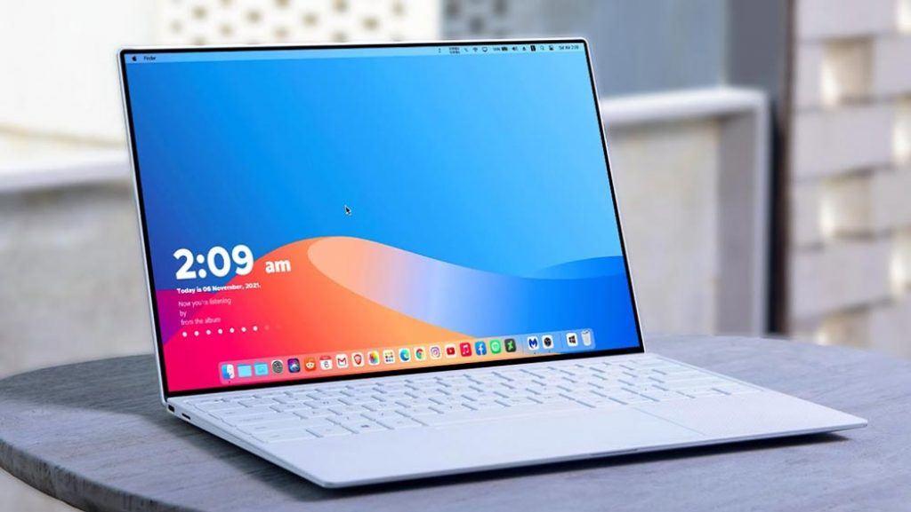

Win11仿macOS
我知道你们喜欢macOS操作系统,但问题是我们没有官方资源在我们的win11上安装macOS 主题,但我们可以做一些疯狂的事情使得我们的Windows 11像mac电脑。你只需要跟着教程做很容易。

点击下载以下八个文件。
Secure UX Theme
BIB3 for Windows
LIT3 for Windows
My ZIP File
StartAllBack
My Dock Finder
Rainmeter
Bluesh